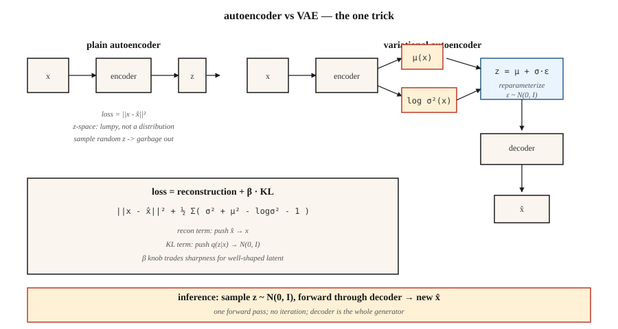

Autoencoders & Variational Autoencoders (VAE)
A plain autoencoder compresses then reconstructs. It memorizes. It does not generate. Add one trick — force the code to look Gaussian — and you get a sampler. That single trick, the reparameterization of z = μ + σ·ε, is why every latent-diffusion and flow-matching image model you use in 2026 has a VAE at the input.
- Type
- Build
- Languages
- Python
- Prerequisites
- Phase 3 · 02 (Backprop), Phase 3 · 07 (CNNs), Phase 8 · 01 (Taxonomy)
- Time
- ~75 minutes
#The Problem
Compress a 784-pixel MNIST digit to a 16-number code, then reconstruct. A plain autoencoder will ace reconstruction MSE but the code space is a lumpy mess. Pick a random point in the code space, decode it, and you get noise. It has no sampler. It is a compression model dressed up.
What you actually want is: (a) the code space is a clean, smooth distribution you can sample from — say an isotropic Gaussian N(0, I), (b) decoding any sample produces a plausible digit, and (c) the encoder and decoder still compress well. Three goals, one architecture, one loss.
Kingma's 2013 VAE solves this by training the encoder to output a distribution q(z|x) = N(μ(x), σ(x)²), pulling that distribution toward the prior N(0, I) via a KL penalty, and then sampling z from q(z|x) before decoding. At inference time, drop the encoder, sample z ~ N(0, I), decode. The KL penalty is what forces the code space to be structured.
In 2026 VAEs rarely ship standalone — they have been outclassed by diffusion for raw image quality — but they are the encoder of choice for every latent-diffusion model (SD 1/2/XL/3, Flux, AudioCraft). Learn the VAE and you learn the invisible first layer of every image pipeline you use.
#The Concept

Autoencoder. z = encoder(x), x̂ = decoder(z), loss = ||x - x̂||². Code space unstructured.
VAE encoder. Outputs two vectors: μ(x) and log σ²(x). These define q(z|x) = N(μ, diag(σ²)).
Reparameterization trick. Sampling from q(z|x) is not differentiable. Rewrite the sample as z = μ + σ·ε where ε ~ N(0, I). Now z is a deterministic function of (μ, σ) plus a non-parameter noise — gradients flow through μ and σ.
Loss. Evidence Lower BOund (ELBO), two terms:
loss = reconstruction + β · KL[q(z|x) || N(0, I)]
= ||x - x̂||² + β · Σ_i ( σ_i² + μ_i² - log σ_i² - 1 ) / 2Reconstruction pushes x̂ toward x. KL pushes q(z|x) toward the prior. They trade off. Small β (<1) = sharper samples, code space less Gaussian. Large β (>1) = cleaner code space, blurrier samples. β-VAE (Higgins 2017) made this knob famous and kicked off disentanglement research.
Sampling. At inference: draw z ~ N(0, I), forward through decoder. One forward pass — no iterative sampling like diffusion.
#Build It
code/main.py implements a tiny VAE without numpy or torch. Input is 8-dimensional synthetic data drawn from a 2-component Gaussian mixture in 8-D. Encoder and decoder are single hidden-layer MLPs. We implement tanh activation, forward pass, loss, and a hand-written backward pass. Not production — pedagogy.
#Step 1: encoder forward
def encode(x, enc):
h = tanh(add(matmul(enc["W1"], x), enc["b1"]))
mu = add(matmul(enc["W_mu"], h), enc["b_mu"])
log_sigma2 = add(matmul(enc["W_sig"], h), enc["b_sig"])
return mu, log_sigma2log σ² instead of σ so the network output is unconstrained (softplus of σ is a trap — gradients die at σ ≈ 0).
#Step 2: reparameterize and decode
def reparameterize(mu, log_sigma2, rng):
eps = [rng.gauss(0, 1) for _ in mu]
sigma = [math.exp(0.5 * lv) for lv in log_sigma2]
return [m + s * e for m, s, e in zip(mu, sigma, eps)]
def decode(z, dec):
h = tanh(add(matmul(dec["W1"], z), dec["b1"]))
return add(matmul(dec["W_out"], h), dec["b_out"])#Step 3: the ELBO
def elbo(x, x_hat, mu, log_sigma2, beta=1.0):
recon = sum((a - b) ** 2 for a, b in zip(x, x_hat))
kl = 0.5 * sum(math.exp(lv) + m * m - lv - 1 for m, lv in zip(mu, log_sigma2))
return recon + beta * kl, recon, klExact closed-form KL because both distributions are Gaussian. Do not integrate numerically. People still ship code with monte-carlo KL estimates in 2026 — it is 3x slower for no reason.
#Step 4: generate
def sample(dec, z_dim, rng):
z = [rng.gauss(0, 1) for _ in range(z_dim)]
return decode(z, dec)That is the generative model. Five lines.
#Pitfalls
- Posterior collapse. KL term drives
q(z|x) → N(0, I)so aggressively thatzcarries no info aboutx. Fix: β-annealing (start β=0, ramp to 1), free bits, or skip the KL on inactive dimensions. - Blurry samples. The Gaussian decoder likelihood implies MSE reconstruction, which is Bayes-optimal for L2 (the mean) — the mean of a set of plausible digits is a fuzzy digit. Fix: discrete decoder (VQ-VAE, NVAE), or use the VAE only as an encoder and stack diffusion on the latents (this is what Stable Diffusion does).
- β too large, too early. See posterior collapse. Start at β≈0.01 and ramp.
- Latent dim too small. 16-D works for MNIST, 256-D for ImageNet 256², 2048-D for ImageNet 1024². Stable Diffusion's VAE compresses 512×512×3 → 64×64×4 (32x downsample factor in spatial area, 32x in channels).
#Use It
The 2026 VAE stack:
| Situation | Pick |
|---|---|
| Image-latent encoder for diffusion | Stable Diffusion VAE (sd-vae-ft-ema) or Flux VAE |
| Audio-latent encoder | Encodec (Meta), SoundStream, or DAC (Descript) |
| Video latents | Sora's spatiotemporal patches, Latte VAE, WAN VAE |
| Disentangled representation learning | β-VAE, FactorVAE, TCVAE |
| Discrete latents (for transformer modelling) | VQ-VAE, RVQ (ResidualVQ) |
| Continuous latents for generation | Plain VAE, then condition a flow/diffusion model in that latent space |
A latent-diffusion model is a VAE with a diffusion model living between encoder and decoder. The VAE does coarse compression, the diffusion model does the heavy lifting. Same pattern for video (VAE + video-diffusion DiT) and audio (Encodec + MusicGen transformer).
#Ship It
Save outputs/skill-vae-trainer.md.
Skill takes: dataset profile + latent-dim target + downstream use (reconstruction, sampling, or latent-diffusion input) and outputs: architecture choice (plain/β/VQ/RVQ), β schedule, latent dim, decoder likelihood (Gaussian vs categorical), and evaluation plan (recon MSE, KL per dim, Fréchet distance between q(z|x) and N(0, I)).
#Exercises
- Easy. Change
βincode/main.pyto0.01,0.1,1.0,5.0. Record the final reconstruction MSE and KL. Which β is Pareto-best for your synthetic data? - Medium. Replace the Gaussian decoder likelihood with a Bernoulli likelihood (cross-entropy loss). Compare sample quality on a binarized version of the same synthetic data.
- Hard. Extend
code/main.pyinto a mini VQ-VAE: replace the continuouszwith a nearest-neighbour lookup in a codebook of K=32 entries. Compare reconstruction MSE and report how many codebook entries get used (codebook collapse is real).
#Key Terms
| Term | What people say | What it actually means |
|---|---|---|
| Autoencoder | Encode-decode network | x → z → x̂, learn MSE. Not generative. |
| VAE | AE with a sampler | Encoder outputs a distribution, KL penalty shapes code space. |
| ELBO | Evidence lower bound | log p(x) ≥ recon - KL[q(z|x) || p(z)]; tight when q = p(z|x). |
| Reparameterization | z = μ + σ·ε |
Rewrites stochastic node as deterministic + pure noise. Enables backprop through sampling. |
| Prior | p(z) |
Target distribution for the latent, typically N(0, I). |
| Posterior collapse | "KL term wins" | Encoder ignores x, outputs the prior; decoder must hallucinate. |
| β-VAE | Tunable KL weight | loss = recon + β·KL. Higher β = more disentangled but blurrier. |
| VQ-VAE | Discrete latent | Replace continuous z with nearest codebook vector; enables transformer modelling. |
#Production note: the VAE is the hottest path in a diffusion server
In a Stable Diffusion / Flux / SD3 pipeline the VAE is called twice per request — once to encode (if doing img2img / inpainting) and once to decode. At 1024² the decoder pass is often the single largest activation-memory peak in the whole pipeline because it upsamples 128×128×16 latents back to 1024×1024×3. Two practical consequences:
- Slice or tile the decode.
diffusersexposespipe.vae.enable_slicing()andpipe.vae.enable_tiling(). Tiling trades a small seam artifact forO(tile²)memory instead ofO(H·W). Essential for 1024²+ on consumer GPUs. - bf16 decoder, fp32 numerics for the final resize. The SD 1.x VAE was released in fp32 and silently produces NaNs when cast to fp16 at 1024²+. SDXL ships
madebyollin/sdxl-vae-fp16-fix— always prefer the fp16-fix variant or use bf16.
#Further Reading
- Kingma & Welling (2013). Auto-Encoding Variational Bayes — the VAE paper.
- Higgins et al. (2017). β-VAE: Learning Basic Visual Concepts with a Constrained Variational Framework — disentangled β-VAE.
- van den Oord et al. (2017). Neural Discrete Representation Learning — VQ-VAE.
- Vahdat & Kautz (2021). NVAE: A Deep Hierarchical Variational Autoencoder — state-of-the-art image VAE.
- Rombach et al. (2022). High-Resolution Image Synthesis with Latent Diffusion Models — Stable Diffusion; VAE as encoder.
- Défossez et al. (2022). High Fidelity Neural Audio Compression — Encodec, the audio VAE standard.
Nice. That's 6 minutes of Generative AI behind you.
Continue to GANs — Generator vs Discriminator →